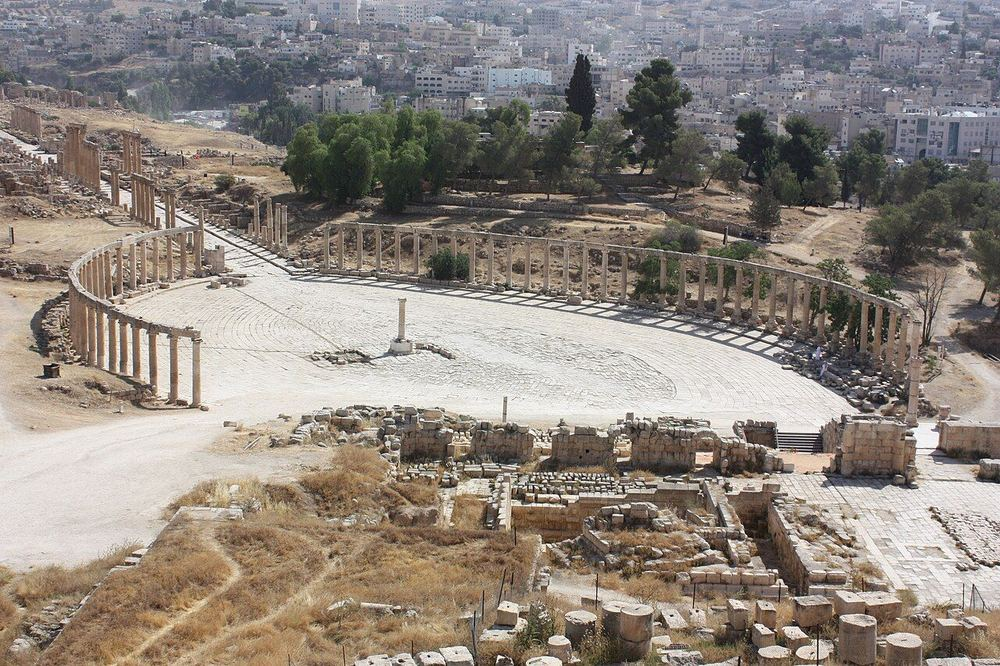
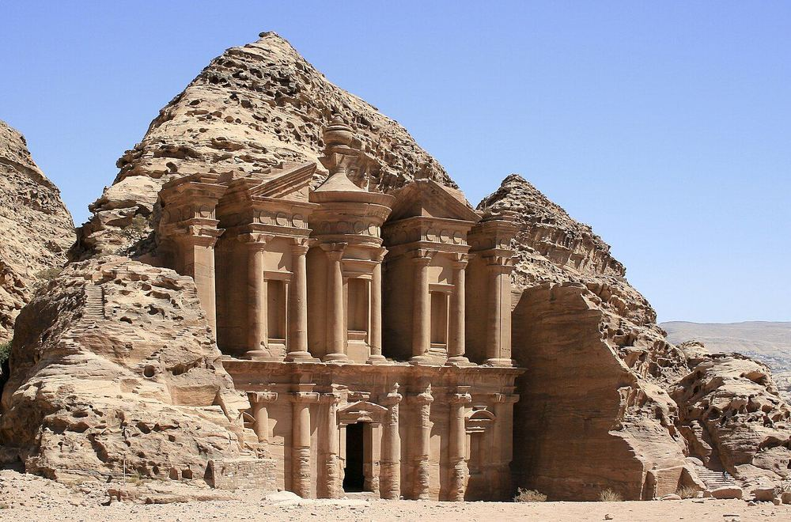

6Days
5 nights
Jordan Delights Tour 1
- Amman
- Ajloun
- Jerash
- Madaba
- Petra
- Wadi Rum
- Dead Sea
From USD 1,065 per person
View itinerary
North · About 1 hour from Amman
One of the best-preserved Roman provincial cities anywhere, an hour’s drive north of Amman.
Overview
The Oval Plaza was the grand entrance to Roman Gerasa, a paved square ringed by 56 Ionic columns. Its streets, temples and theatres make Jerash one of the best-preserved Roman provincial cities anywhere. Look at the paving: the stones curve in rows that follow the oval of the colonnade.
Walk in through Hadrian’s Arch, built for the emperor’s visit in AD 129–130, then follow the colonnaded main street past temples, fountains and theatres. The ruins sit right beside the modern town, which grew up around its Roman core.
Highlights
The triple-arched gateway raised for Emperor Hadrian’s visit in AD 129–130 marks the start of the walk into the city.
Fifty-six Ionic columns ring the paved square, and the curving rows of paving follow the line of the colonnade.
The colonnaded main street runs north through the city. Look down for the ruts that cart wheels wore into its paving stones.
Tall columns of the temple to Artemis, the city’s patron goddess, still stand on the rise above the main street.
Travel programs
Jerash is part of three of our programs. Every program can be adjusted for your dates, pace and hotels.

6Days
5 nights
From USD 1,065 per person
View itinerary
7Days
6 nights
From USD 1,120 per person
View itinerary
8Days
7 nights
From USD 1,315 per person
View itinerary